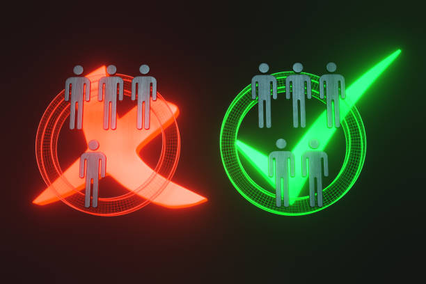
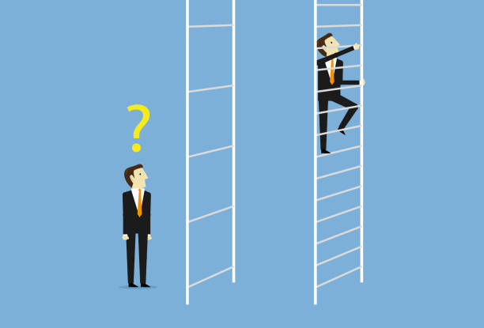
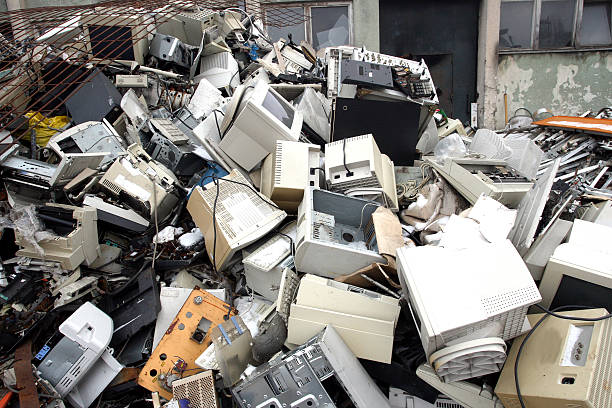

Computer Science.
A vast industry with many greats and many ethical issues too.
So many of these which need to be adressed right now in this lovely website.
Technology Ethical Issues
Technology has the potential to do great good, but it also has the potential to be used for harm. As technology continues to evolve, it is important to consider the ethical implications of its use.
Here are some of the most pressing technology ethical issues:
Privacy
As our lives become increasingly digital, our personal data is being collected and stored by a variety of companies. This data can be used to track our movements, our habits, and our interests. It can also be used to target us with advertising. We need to be careful about how much personal data we share online, and we need to be aware of how our data is being used.
For example, the UK data watchdog, the Information Commissioner's Office (ICO), launched an investigation in 2022 into whether AI systems used by companies in the UK are showing racial bias. The ICO is concerned that AI systems may be used to discriminate against people on the basis of their race, ethnicity, or other protected characteristics.
Bias
Artificial intelligence (AI) systems are trained on data that is collected from the real world. This data can be biased, and this bias can be reflected in AI systems. For example, AI systems that are trained on data from social media platforms have been shown to be biased against women and minorities. We need to be careful about how we use AI systems, and we need to be aware of the potential for bias.
In 2022, Joy Buolamwini, a researcher at the MIT Media Lab, published a study that found that facial recognition software was more likely to misidentify women and people of color. Buolamwini's study has led to calls for more research into the bias of AI systems and for the development of more fair and equitable AI systems.


Security
Technology can be used to harm people. For example, hackers can use technology to steal personal information, to spread malware, or to disrupt critical infrastructure. We need to be careful about how we use technology, and we need to be aware of the potential for security risks.
In 2022, a group of hackers used AI to create deepfakes of high-profile figures, including former US President Barack Obama and former UK Prime Minister Theresa May. The deepfakes were used to spread misinformation and to sow discord. The incident has raised concerns about the potential for AI to be used to create harmful content.
Accessibility
Not everyone has access to technology. People with disabilities may not be able to use computers, smartphones, or other devices. We need to make sure that technology is accessible to everyone, regardless of their abilities.
In 2022, the World Health Organization (WHO) estimated that 1 billion people in the world have some form of disability. This means that a significant proportion of the world's population is unable to access technology that is designed for people without disabilities.
Environmental impact
The production and use of technology has a significant environmental impact. The mining of rare earth minerals, the manufacturing of electronic devices, and the disposal of electronic waste all contribute to pollution and climate change. We need to be mindful of the environmental impact of technology, and we need to find ways to reduce our impact.
In 2022, the United Nations Environment Programme (UNEP) estimated that the global information and communication technology (ICT) sector is responsible for 2% of global greenhouse gas emissions. This means that the ICT sector is a significant contributor to climate change.

Artificial Intelligence
Artificial intelligence (AI) is rapidly changing the world of work. AI-powered machines are already being used to automate tasks that were once done by humans, and this trend is only going to continue. This raises concerns about the future of work, as AI has the potential to displace millions of jobs.
There are a number of things that can be done to mitigate the negative impact of AI on employment. One is to invest in education and training, so that workers can develop the skills they need to work in the AI-powered economy. Another is to create policies that support workers who are displaced by AI, such as unemployment benefits and retraining programs.